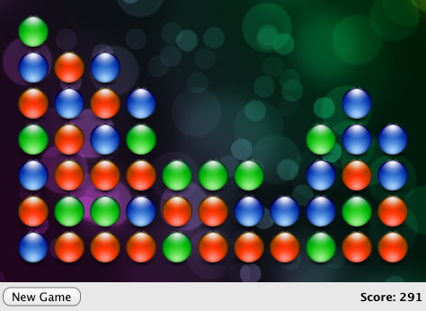

QML Advanced Tutorial
This tutorial walks step-by-step through the creation of a full application using QML. It assumes that you already know the basics of QML (for example, from reading the simple tutorial).
In this tutorial we write a game, Same Game, based on the Same Game application included in the declarative examples directory, which looks like this:

We will cover concepts for producing a fully functioning application, including JavaScript integration, using QML Qt Quick States and Behaviors to manage components and enhance your interface, and storing persistent application data.
An understanding of JavaScript is helpful to understand parts of this tutorial, but if you don't know JavaScript you can still get a feel for how you can integrate backend logic to create and control QML elements.
Tutorial chapters:
- Creating the Game Canvas and Blocks
- Populating the Game Canvas
- Implementing the Game Logic
- Finishing Touches
All the code in this tutorial can be found in Qt's examples/quick/tutorials/samegame directory.